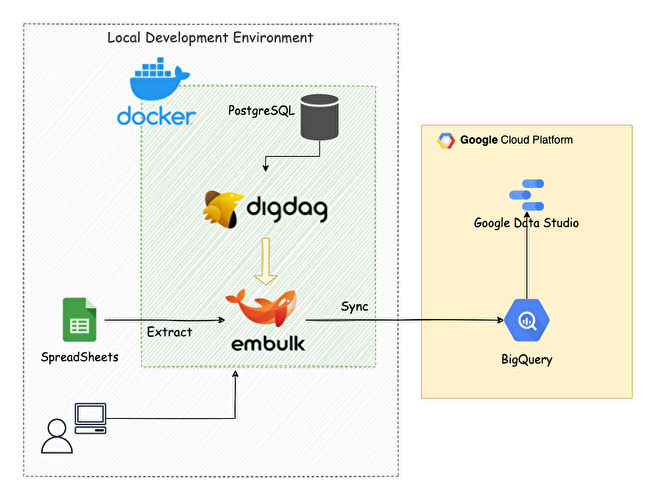
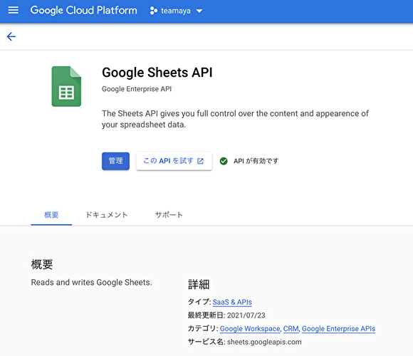
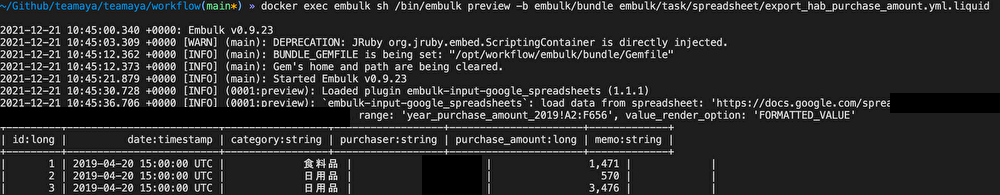
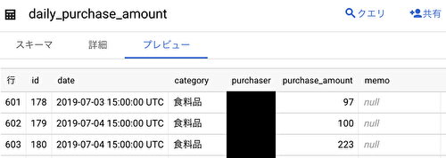
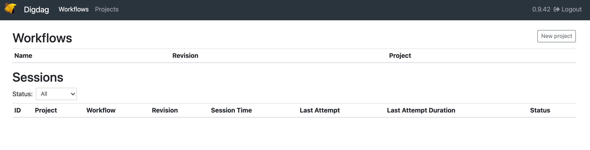
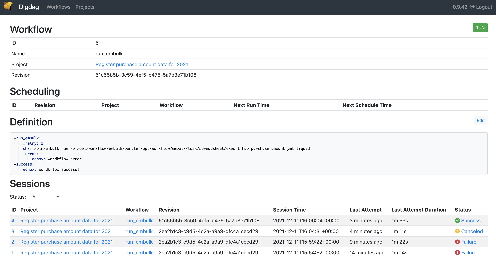

はじめに
今回は，teamaya という個人プロジェクトで進めているデータ連携の話になります．コードは以下のリポジトリに置いてあるので，ご自由に使用下さい！
具体的には，手元にあるスプレッドシートのデータを BigQuery の特定のテーブルに連携するまでの話になります．
普段家計簿のデータをスプレッドシートに手入力で管理してるんですが，そのデータを BigQuery に集めて色々と検証できると良いなーという思いから，データ連携を始めました．加えて，可視化も良くしたい思いもあり，Data Studio でダッシュボードを作ったりもしています．
データ連携をするだけであれば，Embulk を単体実行するのでこと足りますが，今回はサーバーモードで立ち上げた Digdag UI を使ってワークフローを実行しています．スケジュール実行，ワークフロー管理や履歴管理などが UI からだとしやすく，使い心地などを知るためにも使用しました．
また，Docker 環境で実行できるように構成しています．Docker 化することで，簡単に別環境に持っていくことができますし，スクラップ&ビルドがしやすいのもあります．
今回は以下の2種類の方法でデータを連携する方法を紹介します．内容的には既に技術記事に書かれているものが多いと思いますが，今回は Docker コンテナで各タスクが実行できるようにしているので，その辺りを参考頂けたらと思います．
- Docker コンテナ内から Embulk を直接実行して，データを転送する方法
- Digdag UI からワークフローを実行して，データを転送する方法
- こちらも裏側では，Embulkが実行されます．
今回のデータ連携フローのアーキテクチャーは以下のような感じです．

アンドリュー・カーネギーの以下の名言にもあるように，機械学習エコシステムを自分で作っていくために，一歩一歩進めています！
最も高い目標を達成するには、一歩一歩進むしかないという事実を、頭に入れておかなければならない。
BigQuery とスプレッドシートの設定
GCP のアカウント登録方法は割愛しますが，gmail があれば簡単に登録できます．登録が完了したら，適当なプロジェクトを作成して下さい．
Google Sheets API の有効化を行う
「APIとサービス」 → 「ライブラリ」と画面遷移し，検索窓に「Google Sheets API」と入力して検索すると，スプレッドシートの API を有効化できる画面に遷移するので，有効化を行います．ここで有効化しておかないと，この後スプレッドシートを使用したデータ連携が出来ないので注意下さい！

サービスアカウントの作成
それが終わったら，サービスアカウントを作成します．「IAM と管理」 → 「サービスアカウント」へアクセスした後，必要な情報を入力し，キーの作成から JSON を選択してキーの作成を行います．そうすると，サービスアカウントの JSON ファイルがダウンロードされるので，これを ~/.gcp 配下に置いておきます．
サービスアカウントのメールアドレスをスプレッドシートに登録
データ連携したいスプレッドシートを開き，右上の共有ボタンから「ユーザーやグループを追加」の枠にダウンロードしたサービスアカウントのメールアドレスをコピー&ペーストして，送信をクリックします．そうすることで，このスプレッドシートのデータを登録したサービスアカウントで転送することができます．
ここで，メールアドレスの許可をしていない場合，Embulk 実行時に以下のエラーが発生します．
Error: (ClientError) forbidden: The caller does not have permission
BigQuery にデータセットを作成
データを格納するために，事前にデータセットを作成しておく必要があるので，データセット ID を適当に決めて，データセットの作成を行っておきます．
1. Embulk を直接実行してデータ転送を行う場合
この方法は，Docker コンテナ内からEmbulkを直接実行して，スプレッドシートのデータをBigQueryのテーブルに転送する方法になります．
Embulk の細かい説明は割愛しますが，簡単に言えば，バルクデータローダーの役割として BigQuery などのデータレイク/データウェアハウスにデータ転送を行うことができます．
データ転送を行うために用意するものとしては，以下になります．
- Gemfile
- Liquid ファイル
- Dockerfile & docker-compose.yml ファイル
Gemfile を用意する
Embulk のプラグインを Gemfile/Gemfile.lock でバージョン管理するために用意します．Embulk には，データの Input/Output のプラグインがあリ，これを使うことで様々なデータソースからターゲットにデータを連携することができます．
- Input: embulk-input-google_spreadsheets
- Output: embulk-output-bigquery
source 'https://rubygems.org/'
# No versions are specified for 'embulk' to use the gem embedded in embulk.jar.
# Note that prerelease versions (e.g. "0.9.0.beta") do not match the statement.
# Specify the exact prerelease version (like '= 0.9.0.beta') for prereleases.
gem 'embulk'
# input spreadsheets plugin
gem 'embulk-input-google_spreadsheets'
# ouput bigquery plugin
gem 'embulk-output-bigquery'
gem 'tzinfo-data'
Liquid ファイルを作成する
Embulk の設定ファイルとして Liquid ファイルを作成します．YAML ファイルに設定を記述することもできますが，以下のメリットで Liquid ファイルを使用しています．
- 変数を設定することができる
- 同じ設定内容を共通ファイルとして使うことができる
- etc…
BigQuery とスプレッドシートの情報は，.env ファイルを作成して，環境変数として管理しています．これらの変数を Liquid ファイルで使用しています．
in:
type: google_spreadsheets
auth_method: service_account
{% comment %} GCPのサービスアカウントのJSONファイルパス {% endcomment %}
json_keyfile: {{ env.GCP_SERVICE_JSON }}
{% comment %} スプレッドシートのURL {% endcomment %}
spreadsheets_url: {{ env.SPREADSHEETS_TABLE }}
default_timezone: 'Asia/Tokyo'
{% comment %} スプレッドシートのワークシートタイトル {% endcomment %}
worksheet_title: year_purchase_amount_2019
{% comment %} headerを指定している場合は2行目からとなる {% endcomment %}
start_row: 2
{% comment %} カラム名と型を指定する {% endcomment %}
columns:
- {name: id, type: long}
- {name: date, type: timestamp, format: '%Y/%m/%d', timezone: 'Asia/Tokyo'}
- {name: category, type: string}
- {name: purchaser, type: string}
- {name: purchase_amount, type: long}
- {name: memo, type: string}
out:
type: bigquery
mode: replace
auth_method: service_account
json_keyfile: {{ env.GCP_SERVICE_JSON }}
{% comment %} BigQueryのプロジェクト名 {% endcomment %}
project: {{ env.BIGQUERY_PROJECT }}
{% comment %} BigQueryのデータセット名 {% endcomment %}
dataset: {{ env.BIGQUERY_PURCHASE_AMOUNT_DATASET }}
{% comment %} BigQueryのテーブル名 {% endcomment %}
table: daily_purchase_amount
auto_create_table: true
source_format: NEWLINE_DELIMITED_JSON
default_timezone: 'Asia/Tokyo'
default_timestamp_format: '%Y-%m-%d'
formatter: {type: jsonl}
encoders:
- {type: gzip}
retries: 3
env ファイルの説明も補足でしておきます．適宜設定している環境に合わせて修正します．
SPREADSHEETS_TABLE=<該当するスプレッドシートのURL: https://docs.google.com/spreadsheets/d/hogehoge>
BIGQUERY_PROJECT=<BigQueryのプロジェクト名>
BIGQUERY_PURCHASE_AMOUNT_DATASET=<BigQueryのデータセット名>
GCP_SERVICE_JSON=/root/.gcp/hoge.json
Dockerfile & docker-compose.yml ファイルを作成する
今回は docker 環境から実行するので，Dockerfile と docker-compose.yml ファイルを作成します（後ほど使う Digdag の内容も記載されています）．
FROM openjdk:8-alpine
LABEL MAINTAINER=masatakashiwagi
ENV DIGDAG_VERSION="0.9.42"
ENV EMBULK_VERSION="0.9.23"
RUN apk --update add --virtual build-dependencies \
curl \
tzdata \
coreutils \
bash \
&& curl --create-dirs -o /bin/digdag -L "https://dl.digdag.io/digdag-${DIGDAG_VERSION}" \
&& curl --create-dirs -o /bin/embulk -L "https://dl.embulk.org/embulk-$EMBULK_VERSION.jar" \
&& chmod +x /bin/digdag \
&& chmod +x /bin/embulk \
&& cp /usr/share/zoneinfo/Asia/Tokyo /etc/localtime \
&& apk del build-dependencies --purge
ENV PATH="$PATH:/bin"
# Install libc6-compat for Embulk Plugins to use JNI
# cf: https://github.com/jruby/jruby/wiki/JRuby-on-Alpine-Linux
# https://github.com/classmethod/docker-embulk
RUN apk --update add libc6-compat
# Copy Embulk configuration
COPY ./embulk/task /opt/workflow/embulk/task
# Make bundle
WORKDIR /opt/workflow/embulk
RUN embulk mkbundle bundle
# Copy Gemfile file
# This is the workaround, because jruby directory is not created
COPY ./embulk/bundle/Gemfile /opt/workflow/embulk/bundle
COPY ./embulk/bundle/Gemfile.lock /opt/workflow/embulk/bundle
WORKDIR /opt/workflow/embulk/bundle
# Install Embulk Plugins
RUN embulk bundle
# Set up Digdag Server
COPY ./digdag /opt/workflow/digdag
# ADD https://github.com/ufoscout/docker-compose-wait/releases/download/2.9.0/wait /bin/wait
# RUN chmod +x /bin/wait
WORKDIR /opt/workflow
CMD ["tail", "-f", "/dev/null"]
bundle 辺りでまわりくどいやり方をしていますが，RUN embulk bundle を実行した際に上手くインストールできなかったため，ワークアラウンドとして，mkbundle した後に Gemfile/Gemfile.lock を docker コンテナ内に COPY した上で，RUN embulk bundle を行っています．
Embulk を docker コンテナで実行する方法
では，実際に Embulk の実行を行うために，まずは Embulk のコンテナサービスを立ち上げます．
# コンテナの立ち上げ
docker compose up -d embulk
バックグラウンドでコンテナを起動しておきます．その後，dry-run を行うために preview コマンドを実行します．
# dry-run
docker exec embulk sh /bin/embulk preview -b embulk/bundle embulk/task/spreadsheet/export_hab_purchase_amount.yml.liquid
dry-run 実行後の結果を載せておきます．

dry-run が大丈夫だった場合，本番実行を行います．本番は run コマンドを実行します．
# production-run
docker exec embulk sh /bin/embulk run -b embulk/bundle embulk/task/spreadsheet/export_hab_purchase_amount.yml.liquid
本番実行が上手くいくと BigQuery にデータが入っていることを確認できます．

2. Digdag UI からワークフローを実行してデータ転送を行う場合
次に説明するこちらの方法は，digdag server を立ち上げて，UI 上からワークフローを実行して，スプレッドシートのデータを BigQuery のテーブルに転送する方法になります（裏で Embulk が動いています）．
Digdag の細かい説明は割愛しますが，簡単に言えば，設定ファイルでバッチのワークフロー実行を定義・管理できるワークフローエンジンになります．スケジュール実行や失敗時の通知などを行うことができます．
Digdag のワークフローからデータ転送を行うために用意するものとしては，以下になります．
- dig ファイル
- serverのproperties ファイル
- docker-compose.yml ファイル
上記に加えて，1で説明した Embulk 実行に必要なファイルも用意します．
dig ファイルを用意する
個別のワークフローを単発実行する場合は，digdag run hoge.dig で良いのですが，今回はUIから実行したいので，厳密には dig ファイルの中身が要ります．記述する内容としては，ワークフローで実行していくタスクをコードに落としていきます．
Digdag では，エラーの場合や成功した場合に，どういった処理をするのかを書くことができるので，例えば，それぞれの場合で slack に通知を行えたりもできます（今回は slack 通知は実装できていませんが，今後実装していきたいです！）．リトライ回数の設定やスケジュール実行の設定もここでできます．
+task:
_retry: 1
sh>: /bin/embulk run -b /opt/workflow/embulk/bundle /opt/workflow/embulk/task/spreadsheet/export_hab_purchase_amount.yml.liquid
_error:
echo>: workflow error...
+success:
echo>: workflow success!
今回は以下のワークフローになっています．
- task:
- リトライ回数: 1回
- Embulk の実行
- エラーの場合は
workflow error...を echo する
- success:
workflow success!を echo する
success は task が正常に終了した場合に，実行されることになります．
server の properties ファイルを用意する
サーバーモードで起動するために，引数にオプションを指定する必要があるのですが，それらの設定を server.properties ファイルに集約しています．設定内容は色々とあるので詳しくは公式ドキュメント: server-mode-commandsを参照下さい．
このファイルには，サーバーの情報やデータベースの情報を記載しています．
server.bind = 0.0.0.0
server.port = 65432
server.admin.bind = 0.0.0.0
server.admin.port = 65433
server.access-log.pattern = json
server.access-log.path = /var/log/digdag/access_logs
log-server.type = local
# database情報
# database.type = memory
database.type = postgresql
database.user = digdag
database.password = digdag
database.host = postgres
database.port = 5432
database.database = digdag
database.maximumPoolSize = 32
サーバーモードで起動すると，ワークフローの情報を保存するために，データベースの設定が必要になってきます．今回は PostgreSQL を別コンテナで立てて，Digdag コンテナと接続することにしています．ちなみに，これらの情報をインメモリで保存することもできます（この場合は，database.type = memory として下さい）．
docker-compose.yml ファイルを作成する
色々と試して上手くいかなかったのですが，最終的には以下の内容で落ち着きました．service 共通の定義は x-template にまとめています．service は3つありますが，Digdag を使う場合は digdag と postgres のみを立ち上げて使います．
docker の depends_on は依存関係（起動順序）を指定できますが，DB 起動後のアプリ起動までを制御できるわけではないので，postgres の起動完了前に digdag がアクセスしてしまい起動失敗する事があります．
このため，condition: service_started と設定することで，postgres が起動後に digdag が立ち上がるようにしています．
depends_on:
postgres:
condition: service_started
また，tty を true に設定しているのは，コンテナが正常終了して止まらないようにするためになります．
version: '3.8'
# Common definition
x-template: &template
volumes:
- ~/.gcp:/root/.gcp:cached
- /tmp:/tmp
env_file:
- .env
services:
digdag:
container_name: digdag
build: .
tty: true
ports:
- 65432:65432
- 65433:65433
volumes:
- /var/run/docker.sock:/var/run/docker.sock
command: ["java", "-jar", "/bin/digdag", "server", "-c", "digdag/server.properties", "--log", "/var/log/digdag/digdag_server.log", "--task-log", "/var/log/digdag/task_logs"]
depends_on:
postgres:
condition: service_started
<<: *template
postgres:
image: postgres:13.1-alpine
container_name: postgres
ports:
- 5432:5432
environment:
POSTGRES_DB: digdag
POSTGRES_USER: digdag
POSTGRES_PASSWORD: digdag
volumes:
- /tmp/data:/var/lib/postgresql/data
tty: true
<<: *template
embulk:
container_name: embulk
build: .
<<: *template
networks:
default:
external:
name: teamaya
Digdag を docker コンテナで実行する方法
では，Digdag UI を使うために Digdag をサーバーモードで起動します．
# コンテナの立ち上げ
docker compose up -d digdag
バックグラウンドでコンテナを起動しておきます．docker ps コマンドでコンテナが立ち上がっていることを確認したら，http://localhost:65432/ で UI にアクセスします．以下の画面が表示されたら OK です．

New project から Name を設定したら，Add file をクリックして，dig ファイルのコードをコピー&ペーストします．貼り付けたら，Save で内容を保存します．そしたら，Workflows のタブを選択し，先ほど追加したワークフローが表示されているのでクリックします．右上の Run ボタンを押して実行が完了すると，下図のような結果になります．

Status が Success になっていれば，正常終了で BigQuery にデータが入っていると思うので，確認してみて下さい．
おわりに
今回は，手元にあるスプレッドシートのデータを Digdag/Embulk を用いて BigQuery に連携するを紹介しました．
やっぱり，UI で直感的に状況や情報がわかるのはメリットだなと思います．複数のワークフローが動作したりする環境だとそれらも管理できるので良いと思います．スケジュール実行やエラーや成功時の通知設定なども出来るので活用したいと思います．
また今回は，データ連携に Digdag を用いましたが，他にも Apache Airflow やそのマネージドサービスである Cloud Composer を使っても同等のことができると思います．この辺りも別途試していきたいと思います．
個人的な次のステップとしては，Dataform や dbt を使った「データの品質管理」に興味があるので，データを Transform したり，テストしたりして考えていきたいです．また，データレイク/データウェアハウス/データマートの設計などを併せて学習していきたいと思います！
これとは別軸で機械学習パイプラインの設計もしていこうかなと考えています！
参考
- Digdag 入門
- EmbulkとDigdagとデータ分析基盤と
- digdagを DockerizeしてECS上で運用することにしました - 雑なメモ
- Docker Compose の depends_on の使い方まとめ
- DockerのTTYって何?